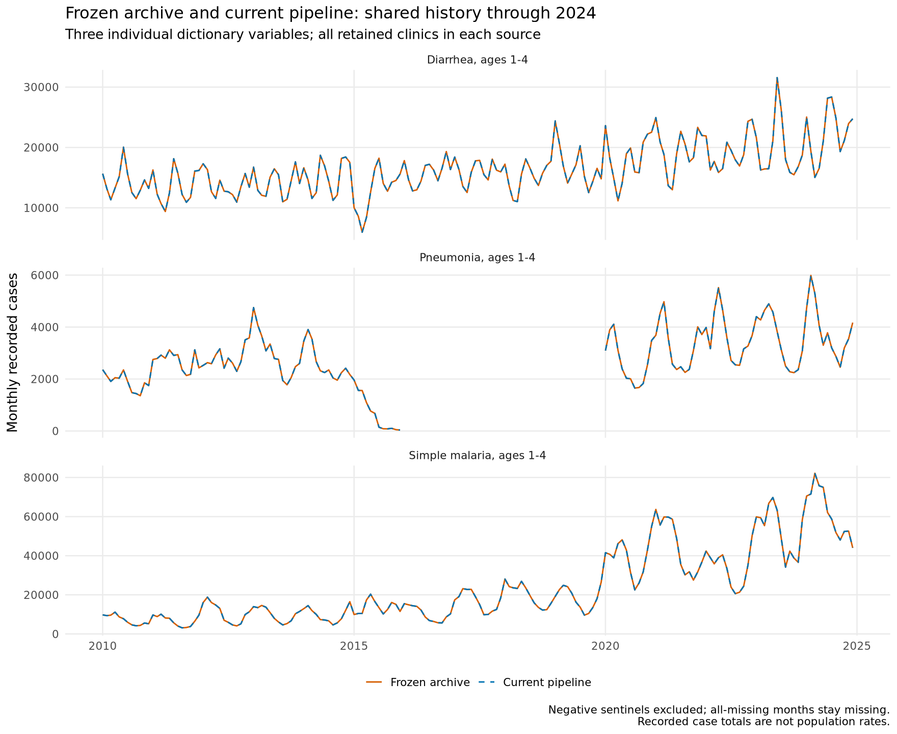
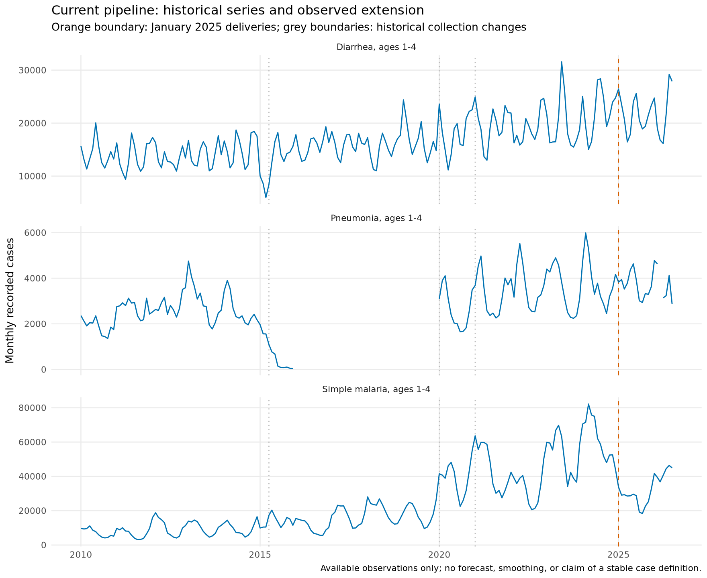
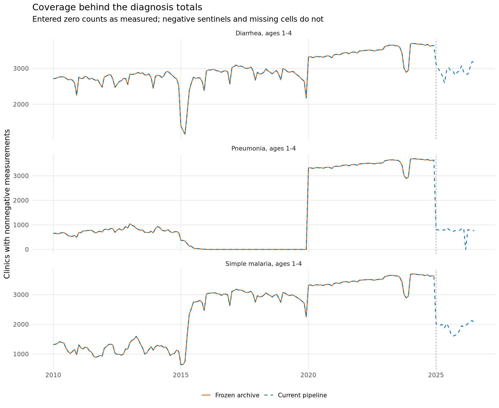

3 A Reader’s Guide to the Cleaned Database
What the files contain, how to use them, and how the historical series extends
The database brings together monthly clinic reports from Madagascar, with historical observations from 2010–2024 and a separately ingested 2025–2026 extension. Its three main components are clinic metadata, a diagnosis dictionary, and diagnosis files. Healthshed polygons provide the spatial reference for geographic analyses. These are clinic-reported counts, not individual patient records, population prevalence estimates, or complete surveillance of every illness in a catchment.
This guide adapts the archived cleaned-database README to the current Parquet release. The pipeline map explains how the original cleaning stages were reproduced; the remaining Pipeline pages document their rules and audits.
3.1 Find the data you need
| Release resource | Unit of observation | Use |
|---|---|---|
clinic_spatial_metadata.parquet |
One row per clinic_ID |
Facility attributes, reporting history, coordinates, healthshed availability, neighbor suggestions |
clinic_reporting_metadata.parquet |
One row per clinic, year, month | Reporting calendar, source selection, historical database-code provenance and ambiguity |
healthsheds2022.parquet |
One row per fs_uid |
Historical catchment geometry in WKT, with CRS and reference year |
diagnosis_dictionary.parquet |
One row per var |
English/French descriptions, wave-specific source expressions, and diagnosis-file location |
by_diagnosis/file*.parquet |
One retained row per clinic, year, month | Harmonized diagnosis variables; fname records the selected source family |
audits/, source_inventory.parquet, provenance.parquet, review_inputs.parquet |
Varies | Trace source files, reviews, ambiguous codes, numeric parsing, mappings, and source transitions |
_contract.parquet, manifest.parquet, resource_schemas.parquet |
Release resources/fields | Immutable resource selection, independent copy verification, and native schemas |
Intermediate reference tables support curation and investigation. They are not required for ordinary analysis of a completed release. The current release uses Parquet throughout; the archive’s CSV, Feather, RDS, and shapefile names are historical references rather than additional files readers must locate.
3.2 Clinic metadata and spatial information
clinic_ID links the two metadata tables to diagnosis records. In the spatial table, n_month, first_report, and last_report summarize retained reporting history. Region/district information, facility type (fs_type), public/private status (pub_priv), and functional status (f_or_nf) describe the available reference information. Associated origin fields retain where attributes came from; these are not a complete monthly history of facility upgrades or status.
ID_checked records historical identity review, principally relevant to the pre-2020 code reconciliation. It is not a guarantee that every clinic identity is correct. clinic_x and clinic_y contain selected longitude and latitude; gps_source, gps_source_raw, and coordinate_status describe their evidence and availability. Newly encountered facilities may have missing coordinates.
Join clinic_spatial_metadata.clinic_ID to healthsheds2022.fs_uid to attach healthsheds. The current spatial file contains geometry_wkt, crs_wkt, is_empty, and reference_year. It is ordinary Parquet containing WKT, not GeoParquet. For example, after reading the table as x:
Healthsheds describe the villages assigned to clinics in the 2022 reference; they do not establish a facility’s catchment for every year. has_healthshed indicates a nonempty matched polygon. Private clinics, facilities outside the 2022 sectorization, and unmatched villages may lack geometry. The archive’s counts of exceptional clinics were a historical snapshot and should not be reused as current counts.
For spatial analyses, the archived recommendation was to consider clinics with a healthshed or a reviewed neighbor_to_merge. This remains an analysis choice, not a filter applied to the released diagnoses. If combining a clinic with its suggested neighbor, document the pair and sum each clinic once; do not duplicate the neighbor’s existing totals. Inspect missing geometry and healthshed_temporal_status before extending a spatial analysis into 2025–2026.
The reporting table uses year and month; diagnosis files use cAnnee and cPeriode. fname is a source-family identifier, not a diagnosis variable:
fname |
Nominal source period |
|---|---|
| 1 | 2010–March 2015 |
| 2 | April 2015–2016 |
| 3 | 2017 |
| 4 | 2018 |
| 5 | 2019 |
| 6 | DHIS2 from 2020 onward, including the new deliveries |
| 0 | No retained report in the reporting calendar |
Historical source selection can retain a report from another source family when the expected file has no report; fname records what was actually used. clinic_database_code retains the source identifier for a clinic-month. When several historical candidates cannot be resolved, the current pipeline keeps one reporting row, leaves that code missing, sets database_code_ambiguous, and preserves candidates in audits/reporting_code_candidates.parquet.
The extension also records source_report_present and source_covered. An absent clinic report and a month absent from the supplied source coverage are different situations. A calendar row with fname = 0 is not an observed zero for every disease.
3.3 Diagnosis dictionary
Each var identifies a harmonized variable. description_en and description_fr describe it; filename locates its diagnosis partition. wave1_colname, wave2_colname, wave3A_colname, and wave3B_colname record the source expressions. waves_available and the Wave 3 descriptions help interpret coverage and construction. Consult the expressions as well as the short English label: a variable can have different components in different collection eras, or be unavailable in an entire wave.
The dictionary retains both broader harmonized categories and finer categories available in only some waves. Variables can overlap. Adding every diarrhea or pneumonia search result can double-count cases; referrals can also be a subset of other age/sex totals. V identifiers and file1–file40 partition names are identifiers, not a clinical taxonomy or a recommendation to combine adjacent columns.
For example, V121 is the dictionary’s diarrhea category for ages 1–4 and is constructed from different source components across waves. V135 is pneumonia for ages 1–4 and has no Wave 2 expression. Its missing 2015–2019 segment in the figures is an unavailable definition, not evidence of zero pneumonia.
3.4 Diagnosis files and interpretation
Each diagnosis partition contains clinic_ID, cAnnee, cPeriode, fname, and its assigned V columns. Retained partitions share a common clinic-month key set; wrong-source alternatives remain curation evidence rather than extra observations to append to the released diagnoses. Cleaning reconciles clinic identifiers, reduces repeated reports, chooses source families, and applies the dictionary’s wave-specific expressions.
Keep these distinctions when analyzing the measurements:
- Entered zero: an observed count of zero.
- Missing value: unavailable or unreported information; do not replace all missing values with zero. All-missing sums in the new extension remain missing.
- Historical
-1: a blank/sentinel in older data. Its handling depends on the variable construction; it is not a negative disease count. - Other negative sentinels, including
-99: retained cleaning/ambiguity evidence requiring investigation before analysis.
Historical clinic IDs attempt to follow facilities through GESIS code changes and the switch to DHIS2 UIDs. Large name changes, reused codes, and incomplete review can still affect linkage. New-source identity decisions and candidate predecessors are retained in the release’s audits.
Collection transitions occurred around April 2015, January 2020, and January 2021. The additional 2025 deliveries introduce another source boundary and mid-2025 renaming changes. A jump in counts can reflect definitions, reporting coverage, source formatting, or epidemiology; the graph alone cannot identify the cause. The archive specifically cautioned about trauma, pneumonia, measles/meningitis notification categories, and malnutrition definitions. Its interpretation of tetanus trends is a historical hypothesis rather than a conclusion established by this migration. Birth variables refer to births recorded within clinics, and trauma categories refer to physical trauma, as described in the archived README; consult individual definitions before use.
3.5 Historical comparison and the continuing series
The reference is the most recent archived data within the hand-delivered May 2025 ZIP, specifically data/clean/by_diagnosis_2024/file2.feather, rather than a later Drive copy. The archive and dictionary are checked against the reviewed baseline. The three examples are the dictionary variables V114 (simple malaria), V121 (diarrhea), and V135 (pneumonia), each for ages 1–4. They are individual variables, not sums of overlapping search results.
Their archived and current English labels and source descriptions match. V121 has different internal Wave 3B X identifiers in the two dictionaries; the comparison preserves this fact rather than assuming equal V labels alone establish semantic equivalence. Full dictionary and all-variable measurement equivalence remain separate investigations.

The totals sum nonnegative values across retained clinics in each source. Negative sentinel cells are excluded and all-missing months remain missing. There is no smoothing, interpolation of missing months, or conversion to population rates. Matching national totals would not by themselves establish agreement at individual clinics, so the diagnostic also aligns unique clinic_ID/year/month keys and compares the original cells, including missing values and sentinels. The evidence snapshot below reports that stricter check.
Measured snapshot, 10 November 2026: all three variables match exactly on all 550,845 shared historical clinic-months. This is 1,652,535 equal cells and zero unequal cells, treating paired missing values as equal and preserving sentinel distinctions. The selected fname also agrees at every shared key.
| Historical coverage through 2024 | Clinic-months |
|---|---|
| Present in both sources | 550,845 |
| Present only in the archive | 39 |
| Present only in the current pipeline | 90 |
The unmatched rows remain explicit coverage differences; their causes have not been established by this diagnostic. Consequently, this is strong measured agreement for the three examples on shared observations, not complete archive equivalence. The monthly plots include each source’s own retained population rather than silently discarding unmatched rows.

The observed extension ends in July 2026 in this snapshot. The continuation contains newly ingested observations, not an extrapolation of the archive. It retains the same dictionary interface while the ingestion handles new headers, repeated deliveries, identity decisions, and missingness. The source-seam audits compare December 2024/January 2025 and May/June 2025 against corresponding earlier-year transitions. Their flags identify questions for review, not proof that a trend is epidemiological or permission to change a diagnosis mapping.

Interpret the counts together with this coverage figure. A clinic with an entered zero contributes to coverage; a missing or negative cell does not. Changes in contributing facilities can alter totals without the same change in within-clinic disease burden. The extension may also end in an incomplete calendar year; compare equivalent months before comparing annual totals.
In these examples, measurement coverage drops at the start of the 2025 deliveries, particularly for malaria and pneumonia. The post-2024 series is a continuation of the data product, but it is not evidence of seamless reporting coverage. Treat an apparent level change across that boundary as a question to investigate, rather than interpreting it directly as a change in illness.